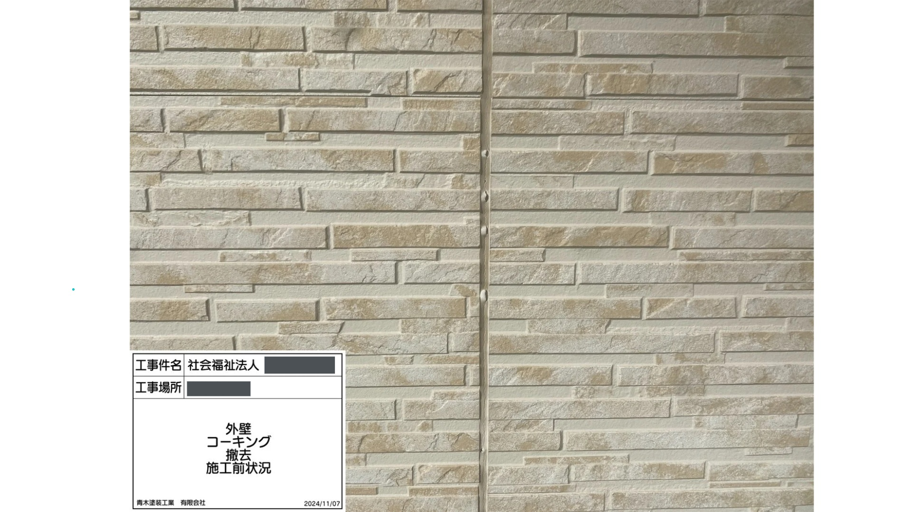
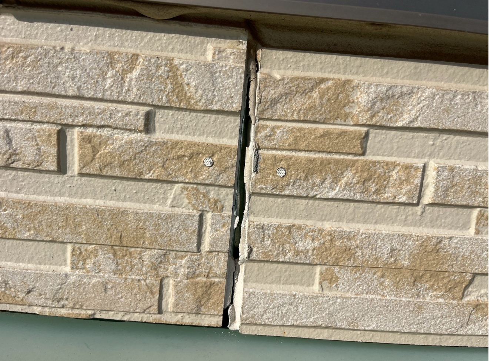
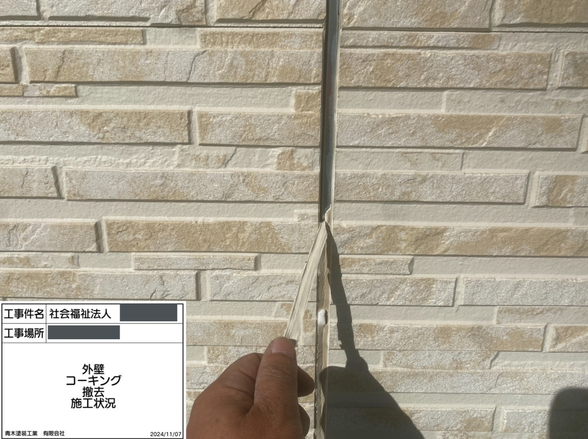
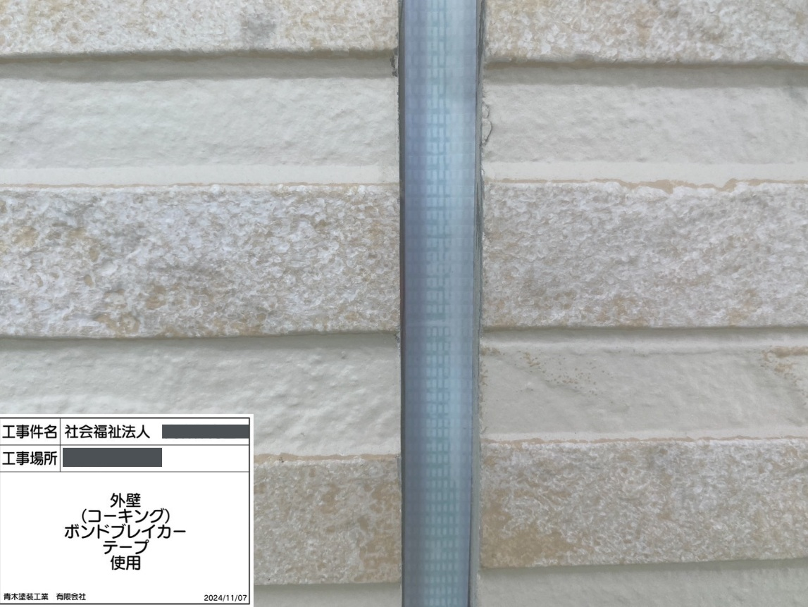
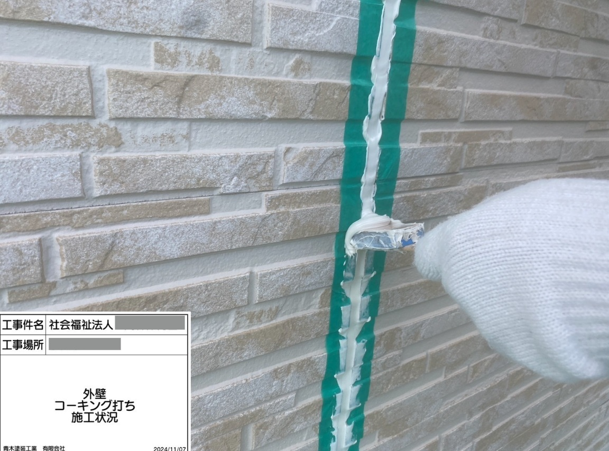

社会福祉法人様 外壁改修工事（大分市）






施工前の状況
サイディングの外壁自体は無機系コーティングをされておりまだ傷んでいませんでしたがシーリングに膨れや劣化がありました。
施工内容
塗装と併せてご希望されておりましたが、①塗膜の痛みがないこと、②シーリングも日当たり面中心に傷んでいる事から劣化箇所のみの打ち替え工事を提案致しました。
AOKI’S POINT（代表コメント）
1級建築施工管理技士/監理技術者監修によりシーリング工事を行っております。施工と監理の合わせ技が出来る施工屋さん、自社施工が強みです。